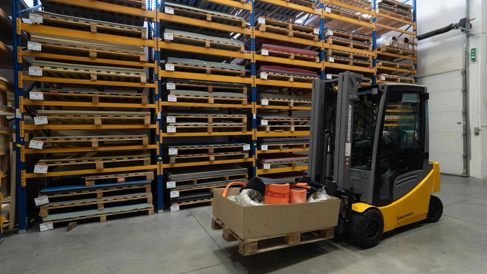

Vision agents for warehouses and yards, with your supervisors in charge
We build agents that watch the cameras already covering your aisles, docks and yard, explain what is happening and alert the supervisor who can act.
What the cameras watch for on site
Most projects begin with the busiest aisle and one or two docks. We agree what counts as an event before building.
- 01
Forklift and pedestrian routes
People and trucks inside an agreed distance of each other, or pedestrians walking in vehicle-only lanes, logged as near-misses with a short clip.
- 02
Blocked exits and aisles
Fire exits, emergency equipment and aisles obstructed by pallets or stock, flagged while someone can still clear them.
- 03
Dock door activity
Doors left open, trailers waiting and loading that has stalled, so the dock team sees problems as they start.
- 04
Pallet and vehicle counts
Counts at doors and gates logged for the shift, kept as totals for reconciling against your warehouse system.
- 05
Yard and gate movements
Vehicles arriving or leaving outside agreed times, with a still frame for whoever manages the gate.
- 06
Stacking and wrapping checks
Pallets stacked above the agreed height or sent out unwrapped, with the clip kept for any later query.
A day at the depot, as an event log
A scripted example of events from a few cameras across one day: each alert, the person it goes to and the review step.
- 08:20
Aisle 7: pedestrian in vehicle lane
A person walks along a vehicle-only lane while a truck is working. The event is logged with a short clip.
- Camera
- Aisle 7
- Logged as
- Near-miss
- Sent to
- Shift supervisor
- 10:35
Dock 4: door open, no trailer
The door has been open for ten minutes with no trailer in position, so the dock lead is asked whether it is intended.
- Asked
- Is this door meant to be open?
- Sent to
- Dock lead
- 10:38
Dock lead replies
The dock lead answers that a trailer is due. The agent notes the reason against the event.
- Reason
- Trailer arriving
- 14:10
Bay C: fire exit blocked
Pallets have been left in front of a marked exit. An alert with a still frame goes to the supervisor.
- Camera
- Bay C
- Sent to
- Shift supervisor
- 14:25
Supervisor marks it reviewed
A person looks at each event and decides what to do. The agent does not act against anyone on its own.
- Status
- Reviewed
- 06Next day
Search the history
Ask for every near-miss in aisle 7 this month and get the clips with a short summary, kept for the period you set.
- Query
- Near-misses, Aisle 7, this month
- Result
- Matching clips with a summary
Scripted example. Not a live camera feed or a real site.
Rules your team sets and changes
You decide what the agent looks for, who is told and how quickly. Rules are written down before launch.
- Person
Minimum distance and vehicle lanes
Your safety lead sets the distances and marks which lanes are vehicle-only.
- Person
How long a door may stay open
Set per dock, so a door open for loading is not treated like one left open.
- Person
Who is told, and when
Routing by area, shift and issue, with a quieter route for out-of-hours alerts.
- Person
Opening hours for gates and yards
The allowed times are yours, including exceptions for early deliveries.
- Person
What a person must review
Anything that could affect a worker or a driver is reviewed by a named person before any follow-up.
Privacy and people in the warehouse and yard
Drivers, agency staff and visitors are on camera as well as employees. These points are agreed before a camera goes live.
- 01
Counts rather than identities
Pallet, vehicle and people counts are kept as totals. Rules rarely need to know who someone is.
- 02
Video stays with you
Processing runs on your site or in your private cloud, so raw video is not sent to applyd.ai.
- 03
Visitors and drivers
Signage at gates and docks tells visitors and drivers that cameras are in use and why.
- 04
Blurring, retention and assessment
Blurring and retention limits are set per camera, and we help with a data protection impact assessment and worker consultation.
Common questions about this work
Do we need new cameras for the warehouse?
Usually not. If your cameras or recorder can stream over RTSP or ONVIF, we can read them. We check mounting height, angle and lighting on your own footage first, because racking and glare can limit what a camera sees. We also note any blind spots up front.
How does it detect a forklift near-miss?
It finds people and vehicles in each frame and checks how close they are against the distance you set. When a pair crosses that limit, the event is logged with a short clip for your safety lead to review. Nothing is disciplined or stopped automatically.
Can it connect to our warehouse management system?
Often, yes. Counts and events can be sent by webhook or a standard integration to your warehouse or ticketing tool. We scope that with you, as it depends on what your system exposes and what you want reconciled. Nothing is promised until we have seen your system.
What about drivers and visitors on camera?
They should be told. We recommend clear signage at gates and docks, keeping clips only as long as you need them and blurring where you can. The assessment we help with covers non-employees as well as your own staff. Drivers can ask who to contact about footage.
Does it act on its own, such as stopping a truck?
No. It alerts the right person and logs the event. A supervisor reviews it and decides what to do. It does not control vehicles or doors, and it is not used for automatic discipline. Doors, gates and vehicles stay under human control.